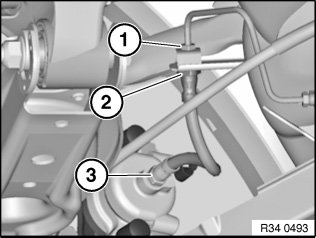

34 32 980 Replacing Rear Left or Right Brake Hose (Between Brake Caliper and Pipe)
34 32 980 Replacing rear left or right brake hose (between brake caliper and pipe)Note:
^ Read and comply with General Information.
After completing work: Bleed braking system

Press clutch pedal down to floor and secure with pedal support.
Note:
The pedal support may only be released when the brake lines are reconnected.
This prevents brake fluid from emerging from the expansion tank and air from entering the system when the brake lines are opened.
Important!
Grip brake hose at square head (2) so that connecting piece can not rotate in retaining bracket.

Never twist brake hose when installing it and avoid all contact with parts attached rigidly to the body.
Disconnect brake hose from brake line (1).
Installation:
Tightening torque 34 32 1AZ.
Detach brake hose from brake caliper (3).
Installation:
Tightening torque 34 32 3AZ.
Installation:
First tighten brake hose on brake caliper.
Insert brake hose in bracket and screw onto brake pipe.